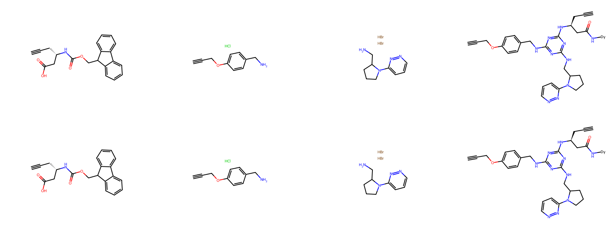
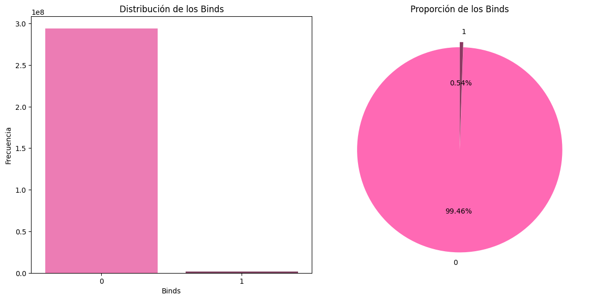
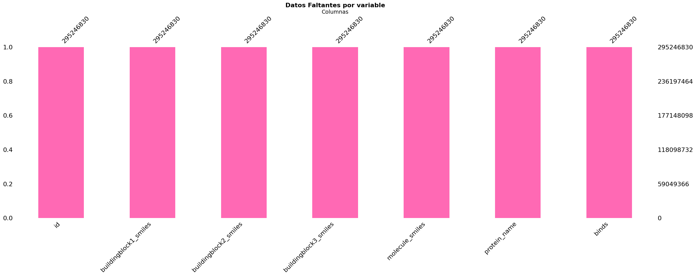

Ejercicio 2#
Ejercicio 2.1#
Librerías y módulos necesarios#
import pandas as pd
import missingno as msno
import seaborn as sns
import matplotlib.pyplot as plt
import numpy as np
from rdkit import Chem
from rdkit.Chem import Draw
from sklearn.feature_selection import SelectKBest, chi2
from sklearn.model_selection import train_test_split
from sklearn.preprocessing import OneHotEncoder
from IPython.display import display
---------------------------------------------------------------------------
ModuleNotFoundError Traceback (most recent call last)
Cell In[1], line 2
1 import pandas as pd
----> 2 import missingno as msno
3 import seaborn as sns
4 import matplotlib.pyplot as plt
ModuleNotFoundError: No module named 'missingno'
Contextualización#
# Visualización de algunas moléculas.
def moleculas(data, cantidad):
data_mol = data.reset_index(drop = True)
mols = []
for i in range(cantidad):
mols += [Chem.MolFromSmiles(data_mol['buildingblock1_smiles'][i]),Chem.MolFromSmiles(data_mol['buildingblock2_smiles'][i]),
Chem.MolFromSmiles(data_mol['buildingblock3_smiles'][i]),Chem.MolFromSmiles(data_mol['molecule_smiles'][i])]
return Draw.MolsToGridImage(mols, molsPerRow=4, subImgSize=(400,300))
moleculas(data, 2)

Base de datos (Entrenamiento)#
data = pd.read_parquet('train.parquet', engine = 'pyarrow')
Características de la base de datos#
data.head()
| id | buildingblock1_smiles | buildingblock2_smiles | buildingblock3_smiles | molecule_smiles | protein_name | binds | |
|---|---|---|---|---|---|---|---|
| 0 | 0 | C#CC[C@@H](CC(=O)O)NC(=O)OCC1c2ccccc2-c2ccccc21 | C#CCOc1ccc(CN)cc1.Cl | Br.Br.NCC1CCCN1c1cccnn1 | C#CCOc1ccc(CNc2nc(NCC3CCCN3c3cccnn3)nc(N[C@@H]... | BRD4 | 0 |
| 1 | 1 | C#CC[C@@H](CC(=O)O)NC(=O)OCC1c2ccccc2-c2ccccc21 | C#CCOc1ccc(CN)cc1.Cl | Br.Br.NCC1CCCN1c1cccnn1 | C#CCOc1ccc(CNc2nc(NCC3CCCN3c3cccnn3)nc(N[C@@H]... | HSA | 0 |
| 2 | 2 | C#CC[C@@H](CC(=O)O)NC(=O)OCC1c2ccccc2-c2ccccc21 | C#CCOc1ccc(CN)cc1.Cl | Br.Br.NCC1CCCN1c1cccnn1 | C#CCOc1ccc(CNc2nc(NCC3CCCN3c3cccnn3)nc(N[C@@H]... | sEH | 0 |
| 3 | 3 | C#CC[C@@H](CC(=O)O)NC(=O)OCC1c2ccccc2-c2ccccc21 | C#CCOc1ccc(CN)cc1.Cl | Br.NCc1cccc(Br)n1 | C#CCOc1ccc(CNc2nc(NCc3cccc(Br)n3)nc(N[C@@H](CC... | BRD4 | 0 |
| 4 | 4 | C#CC[C@@H](CC(=O)O)NC(=O)OCC1c2ccccc2-c2ccccc21 | C#CCOc1ccc(CN)cc1.Cl | Br.NCc1cccc(Br)n1 | C#CCOc1ccc(CNc2nc(NCc3cccc(Br)n3)nc(N[C@@H](CC... | HSA | 0 |
data.info()
<class 'pandas.core.frame.DataFrame'>
RangeIndex: 295246830 entries, 0 to 295246829
Data columns (total 7 columns):
# Column Dtype
--- ------ -----
0 id int64
1 buildingblock1_smiles object
2 buildingblock2_smiles object
3 buildingblock3_smiles object
4 molecule_smiles object
5 protein_name object
6 binds int64
dtypes: int64(2), object(5)
memory usage: 15.4+ GB
data.shape
(295246830, 7)
data.describe(include = object)
| buildingblock1_smiles | buildingblock2_smiles | buildingblock3_smiles | molecule_smiles | protein_name | |
|---|---|---|---|---|---|
| count | 295246830 | 295246830 | 295246830 | 295246830 | 295246830 |
| unique | 271 | 693 | 872 | 98415610 | 3 |
| top | O=C(N[C@H]1CC[C@@H](C(=O)O)C1)OCC1c2ccccc2-c2c... | NCc1ccccn1 | NCCc1nccc(C2CC2)n1 | [N-]=[N+]=NCCC[C@H](Nc1nc(Nc2noc3ccc(F)cc23)nc... | BRD4 |
| freq | 1090407 | 706092 | 562191 | 3 | 98415610 |
binds_counts = data['binds'].value_counts(normalize = True)
binds_counts
| proportion | |
|---|---|
| binds | |
| 0 | 0.994615 |
| 1 | 0.005385 |
fig, axes = plt.subplots(1, 2, figsize=(12, 6))
sns.countplot(x = data['binds'], hue = data['binds'], palette = ['#FF69B4', '#8B3A62'], legend = False, ax=axes[0])
axes[0].set_title('Distribución de los Binds')
axes[0].set_xlabel('Binds')
axes[0].set_ylabel('Frecuencia')
binds_counts.plot(kind = 'pie', autopct = '%1.2f%%', colors = ['#FF69B4', '#8B3A62'], startangle = 90, explode = (0.05, 0), ax = axes[1])
axes[1].set_title('Proporción de los Binds')
axes[1].set_ylabel('')
plt.tight_layout()
plt.show()

data_copy = data.copy()
Datos faltantes#
msno.bar(data, color = "#FF69B4", sort = 'ascending')
plt.title('Datos Faltantes por variable', fontsize = 16, fontweight = 'bold')
plt.xlabel('Columnas', fontsize = 14)
plt.ylabel('Porcentaje de Datos Faltantes', fontsize = 14)
plt.xticks(rotation = 45)
plt.tight_layout()
plt.show()

Filtración de la base de datos por proteínas#
proteinas = data.groupby('protein_name')['binds'].value_counts(normalize=True).unstack().reset_index()
proteinas
| binds | protein_name | 0 | 1 |
|---|---|---|---|
| 0 | BRD4 | 0.995357 | 0.004643 |
| 1 | HSA | 0.995850 | 0.004150 |
| 2 | sEH | 0.992638 | 0.007362 |
data_proteina1 = data[data['protein_name'] == 'sEH']
data_proteina2 = data[data['protein_name'] == 'BRD4']
data_proteina3 = data[data['protein_name'] == 'HSA']
Proteína SEH (EPHX2)#
data_p1, _ = train_test_split( data_proteina1, train_size = 100000, stratify = data_proteina1['binds'], random_state = 11)
data_p1.head()
| id | buildingblock1_smiles | buildingblock2_smiles | buildingblock3_smiles | molecule_smiles | protein_name | binds | |
|---|---|---|---|---|---|---|---|
| 147239129 | 147239129 | O=C(Nc1c(Cl)cccc1C(=O)O)OCC1c2ccccc2-c2ccccc21 | CNC(=O)COCCN.Cl | CN(CCN)C1CCOCC1 | CNC(=O)COCCNc1nc(NCCN(C)C2CCOCC2)nc(Nc2c(Cl)cc... | sEH | 0 |
| 257990426 | 257990426 | O=C(O)C[C@@H](NC(=O)OCC1c2ccccc2-c2ccccc21)c1c... | Nc1cc(N2CCNCC2)ccc1[N+](=O)[O-] | Cl.NCCN1CCCS1(=O)=O | O=C(C[C@@H](Nc1nc(NCCN2CCCS2(=O)=O)nc(Nc2cc(N3... | sEH | 0 |
| 180571076 | 180571076 | O=C(Nc1ccc(Br)c(C(=O)O)c1)OCC1c2ccccc2-c2ccccc21 | NCc1ccc2[nH]ccc2c1 | Cc1ccc(N)nn1 | Cc1ccc(Nc2nc(NCc3ccc4[nH]ccc4c3)nc(Nc3ccc(Br)c... | sEH | 0 |
| 186946937 | 186946937 | O=C(Nc1ccc(C(=O)O)c([N+](=O)[O-])c1)OCC1c2cccc... | Cl.NCc1ccc(-c2c[nH]c(=O)[nH]c2=O)cc1 | Nc1ccsc1.O=C(O)C(=O)O | O=C(N[Dy])c1ccc(Nc2nc(NCc3ccc(-c4c[nH]c(=O)[nH... | sEH | 0 |
| 207543668 | 207543668 | O=C(Nc1cccc(-c2cccc(C(=O)O)c2)c1O)OCC1c2ccccc2... | Cl.NCC(=O)N1CCCO1 | Nc1c(O)ncnc1O | O=C(N[Dy])c1cccc(-c2cccc(Nc3nc(NCC(=O)N4CCCO4)... | sEH | 0 |
data_p1.describe(include = object)
| buildingblock1_smiles | buildingblock2_smiles | buildingblock3_smiles | molecule_smiles | protein_name | |
|---|---|---|---|---|---|
| count | 100000 | 100000 | 100000 | 100000 | 100000 |
| unique | 271 | 693 | 867 | 100000 | 1 |
| top | O=C(Nc1cc(C(=O)O)ccc1Br)OCC1c2ccccc2-c2ccccc21 | CC1(CCCCN)OCCO1 | CSc1nnc(CN)s1 | Cc1cc(Nc2nc(Nc3ccc(C)c(Br)c3)nc(Nc3ccc([N+](=O... | sEH |
| freq | 418 | 261 | 226 | 1 | 100000 |
data_p1.isnull().sum()
| 0 | |
|---|---|
| id | 0 |
| buildingblock1_smiles | 0 |
| buildingblock2_smiles | 0 |
| buildingblock3_smiles | 0 |
| molecule_smiles | 0 |
| protein_name | 0 |
| binds | 0 |
data_p1 = data_p1.reset_index()
categoricas = ['protein_name', 'buildingblock1_smiles', 'buildingblock2_smiles', 'buildingblock3_smiles']
encoder1 = OneHotEncoder(sparse_output = False) #La salida será una matriz densa (DataFrame de Pandas)
encoded1 = encoder1.fit_transform(data_p1[categoricas])
df_encoded1 = pd.DataFrame(encoded1, columns = encoder1.get_feature_names_out(categoricas))
df_proteina1 = pd.concat([data_p1, df_encoded1], axis = 1) # axis = 1: Indica que las columnas especificadas deben ser eliminadas
df_proteina1 = df_proteina1.drop(categoricas, axis = 1)
df_proteina1.head()
| index | id | molecule_smiles | binds | protein_name_sEH | buildingblock1_smiles_C#CC[C@@H](CC(=O)O)NC(=O)OCC1c2ccccc2-c2ccccc21 | buildingblock1_smiles_C#CC[C@@H](NC(=O)OCC1c2ccccc2-c2ccccc21)C(=O)O | buildingblock1_smiles_C#CC[C@@](C)(NC(=O)OCC1c2ccccc2-c2ccccc21)C(=O)O | buildingblock1_smiles_C#CC[C@H](CC(=O)O)NC(=O)OCC1c2ccccc2-c2ccccc21 | buildingblock1_smiles_C#CC[C@H](NC(=O)OCC1c2ccccc2-c2ccccc21)C(=O)O | ... | buildingblock3_smiles_Nc1ncnc(=O)[nH]1 | buildingblock3_smiles_Nc1ncnc(Cl)c1Cl | buildingblock3_smiles_Nc1ncnc2[nH]cnc12 | buildingblock3_smiles_Nc1ncnc2[nH]ncc12 | buildingblock3_smiles_Nc1ncnc2c1ncn2C1CCCCO1 | buildingblock3_smiles_Nc1ncncc1Br | buildingblock3_smiles_Nc1nnc(S)s1 | buildingblock3_smiles_Nc1nncs1 | buildingblock3_smiles_Nc1nnn[nH]1 | buildingblock3_smiles_Nc1noc2ccc(F)cc12 | |
|---|---|---|---|---|---|---|---|---|---|---|---|---|---|---|---|---|---|---|---|---|---|
| 0 | 147239129 | 147239129 | CNC(=O)COCCNc1nc(NCCN(C)C2CCOCC2)nc(Nc2c(Cl)cc... | 0 | 1.0 | 0.0 | 0.0 | 0.0 | 0.0 | 0.0 | ... | 0.0 | 0.0 | 0.0 | 0.0 | 0.0 | 0.0 | 0.0 | 0.0 | 0.0 | 0.0 |
| 1 | 257990426 | 257990426 | O=C(C[C@@H](Nc1nc(NCCN2CCCS2(=O)=O)nc(Nc2cc(N3... | 0 | 1.0 | 0.0 | 0.0 | 0.0 | 0.0 | 0.0 | ... | 0.0 | 0.0 | 0.0 | 0.0 | 0.0 | 0.0 | 0.0 | 0.0 | 0.0 | 0.0 |
| 2 | 180571076 | 180571076 | Cc1ccc(Nc2nc(NCc3ccc4[nH]ccc4c3)nc(Nc3ccc(Br)c... | 0 | 1.0 | 0.0 | 0.0 | 0.0 | 0.0 | 0.0 | ... | 0.0 | 0.0 | 0.0 | 0.0 | 0.0 | 0.0 | 0.0 | 0.0 | 0.0 | 0.0 |
| 3 | 186946937 | 186946937 | O=C(N[Dy])c1ccc(Nc2nc(NCc3ccc(-c4c[nH]c(=O)[nH... | 0 | 1.0 | 0.0 | 0.0 | 0.0 | 0.0 | 0.0 | ... | 0.0 | 0.0 | 0.0 | 0.0 | 0.0 | 0.0 | 0.0 | 0.0 | 0.0 | 0.0 |
| 4 | 207543668 | 207543668 | O=C(N[Dy])c1cccc(-c2cccc(Nc3nc(NCC(=O)N4CCCO4)... | 0 | 1.0 | 0.0 | 0.0 | 0.0 | 0.0 | 0.0 | ... | 0.0 | 0.0 | 0.0 | 0.0 | 0.0 | 0.0 | 0.0 | 0.0 | 0.0 | 0.0 |
5 rows × 1836 columns
df_proteina1.shape
(100000, 1836)
missing_columns1 = df_proteina1.isnull().sum()
missing_columns1= missing_columns1[missing_columns1 > 0]
print(f"Número de columnas con datos faltantes: {len(missing_columns1)}")
Número de columnas con datos faltantes: 0
df_proteina1.drop(columns = ['molecule_smiles'], inplace = True)
df_proteina1.drop(columns = ['id'], inplace = True)
y1 = df_proteina1['binds']
# Aplicar SelectKBest con chi2 para seleccionar las mejores características
k_best1 = SelectKBest(score_func = chi2, k = 100) # Se quieren conservar k = 100 mejores características
X_new1 = k_best1.fit_transform(df_proteina1, y1)
selected_features = k_best1.get_support(indices=True) # Obtener los índices de las características seleccionadas
proteina1 = df_proteina1.iloc[:, selected_features]
# Definir y1 como la variable objetivo (la columna 'binds') en el conjunto de entrenamiento y_train
ytrain = y1.copy()
proteina1.head()
| index | binds | buildingblock1_smiles_O=C(NC(Cc1ccccc1)C(=O)O)OCC1c2ccccc2-c2ccccc21 | buildingblock1_smiles_O=C(NCC1CCC(C(=O)O)CC1)OCC1c2ccccc2-c2ccccc21 | buildingblock1_smiles_O=C(NC[C@H]1CC[C@H](C(=O)O)CC1)OCC1c2ccccc2-c2ccccc21 | buildingblock1_smiles_O=C(N[C@@H](Cc1cccnc1)C(=O)O)OCC1c2ccccc2-c2ccccc21 | buildingblock1_smiles_O=C(N[C@H](Cc1ccc(F)c(F)c1)C(=O)O)OCC1c2ccccc2-c2ccccc21 | buildingblock1_smiles_O=C(Nc1ccc(C(=O)O)cc1)OCC1c2ccccc2-c2ccccc21 | buildingblock1_smiles_O=C(Nc1ccc(C(=O)O)cc1O)OCC1c2ccccc2-c2ccccc21 | buildingblock1_smiles_O=C(Nc1ccc(C(=O)O)nc1)OCC1c2ccccc2-c2ccccc21 | ... | buildingblock3_smiles_Nc1c2c(cc3c1CCC3)CCC2 | buildingblock3_smiles_Nc1cc(C(F)(F)F)cc(C(F)(F)F)c1 | buildingblock3_smiles_Nc1cc(Cl)ccc1F | buildingblock3_smiles_Nc1cc(F)c(F)cc1[N+](=O)[O-] | buildingblock3_smiles_Nc1ccc2c(c1)CNCC2 | buildingblock3_smiles_Nc1cccc2ocnc12 | buildingblock3_smiles_Nc1cncc(F)c1 | buildingblock3_smiles_Nc1n[nH]c2ccc([N+](=O)[O-])cc12 | buildingblock3_smiles_Nc1nc(NCc2ccc(F)cc2)ccc1[N+](=O)[O-] | buildingblock3_smiles_Nc1ncco1 | |
|---|---|---|---|---|---|---|---|---|---|---|---|---|---|---|---|---|---|---|---|---|---|
| 0 | 147239129 | 0 | 0.0 | 0.0 | 0.0 | 0.0 | 0.0 | 0.0 | 0.0 | 0.0 | ... | 0.0 | 0.0 | 0.0 | 0.0 | 0.0 | 0.0 | 0.0 | 0.0 | 0.0 | 0.0 |
| 1 | 257990426 | 0 | 0.0 | 0.0 | 0.0 | 0.0 | 0.0 | 0.0 | 0.0 | 0.0 | ... | 0.0 | 0.0 | 0.0 | 0.0 | 0.0 | 0.0 | 0.0 | 0.0 | 0.0 | 0.0 |
| 2 | 180571076 | 0 | 0.0 | 0.0 | 0.0 | 0.0 | 0.0 | 0.0 | 0.0 | 0.0 | ... | 0.0 | 0.0 | 0.0 | 0.0 | 0.0 | 0.0 | 0.0 | 0.0 | 0.0 | 0.0 |
| 3 | 186946937 | 0 | 0.0 | 0.0 | 0.0 | 0.0 | 0.0 | 0.0 | 0.0 | 0.0 | ... | 0.0 | 0.0 | 0.0 | 0.0 | 0.0 | 0.0 | 0.0 | 0.0 | 0.0 | 0.0 |
| 4 | 207543668 | 0 | 0.0 | 0.0 | 0.0 | 0.0 | 0.0 | 0.0 | 0.0 | 0.0 | ... | 0.0 | 0.0 | 0.0 | 0.0 | 0.0 | 0.0 | 0.0 | 0.0 | 0.0 | 0.0 |
5 rows × 100 columns
proteina1.shape
(100000, 100)
Proteína BRD4#
data_p2, _ = train_test_split( data_proteina2, train_size = 100000, stratify = data_proteina2['binds'], random_state = 11)
data_p2.head()
| id | buildingblock1_smiles | buildingblock2_smiles | buildingblock3_smiles | molecule_smiles | protein_name | binds | |
|---|---|---|---|---|---|---|---|
| 100174431 | 100174431 | O=C(N[C@@H](Cc1ccc(F)cc1F)C(=O)O)OCC1c2ccccc2-... | Nc1nc(-c2cccnc2)cs1 | Cc1nnsc1CN | Cc1nnsc1CNc1nc(Nc2nc(-c3cccnc3)cs2)nc(N[C@@H](... | BRD4 | 0 |
| 288634638 | 288634638 | O=C(O)[C@H]1CC2CCCCC2N1C(=O)OCC1c2ccccc2-c2ccc... | Nc1ccncc1[N+](=O)[O-] | Nc1nc2nc[nH]c2c(=O)[nH]1 | O=C(N[Dy])[C@H]1CC2CCCCC2N1c1nc(Nc2nc3nc[nH]c3... | BRD4 | 0 |
| 43808760 | 43808760 | C[C@@H](OCc1ccccc1)[C@H](NC(=O)OCC1c2ccccc2-c2... | COc1c(F)cc(N)cc1F | Nc1ccc(F)cc1CO | COc1c(F)cc(Nc2nc(Nc3ccc(F)cc3CO)nc(N[C@H](C(=O... | BRD4 | 0 |
| 91037118 | 91037118 | O=C(N[C@@H](Cc1c(F)c(F)c(F)c(F)c1F)C(=O)O)OCC1... | Cl.NCCOC1CCS(=O)(=O)C1 | Cl.Cl.NCCc1nnc2c(=O)[nH]ccn12 | O=C(N[Dy])[C@H](Cc1c(F)c(F)c(F)c(F)c1F)Nc1nc(N... | BRD4 | 0 |
| 3471777 | 3471777 | C#CC[C@H](CC(=O)O)NC(=O)OCC1c2ccccc2-c2ccccc21 | COC(=O)c1scnc1N | NCC1CSCCN1Cc1ccccc1 | C#CC[C@H](CC(=O)N[Dy])Nc1nc(NCC2CSCCN2Cc2ccccc... | BRD4 | 0 |
data_p2.describe(include = object)
| buildingblock1_smiles | buildingblock2_smiles | buildingblock3_smiles | molecule_smiles | protein_name | |
|---|---|---|---|---|---|
| count | 100000 | 100000 | 100000 | 100000 | 100000 |
| unique | 271 | 693 | 871 | 100000 | 1 |
| top | O=C(N[C@@H](Cc1cc(F)c(F)c(F)c1)C(=O)O)OCC1c2cc... | NCCC(=O)NC1CCCC1 | Cc1cc2cc(CN)ccc2[nH]1 | Cc1ccc(C)c(CNc2nc(NCC3CCN(C(N)=O)C3)nc(Nc3ccc(... | BRD4 |
| freq | 436 | 272 | 233 | 1 | 100000 |
data_p2.isnull().sum()
| 0 | |
|---|---|
| id | 0 |
| buildingblock1_smiles | 0 |
| buildingblock2_smiles | 0 |
| buildingblock3_smiles | 0 |
| molecule_smiles | 0 |
| protein_name | 0 |
| binds | 0 |
data_p2 = data_p2.reset_index()
categoricas = ['protein_name', 'buildingblock1_smiles', 'buildingblock2_smiles', 'buildingblock3_smiles']
encoder2 = OneHotEncoder(sparse_output = False)
encoded2 = encoder2.fit_transform(data_p2[categoricas])
df_encoded2 = pd.DataFrame(encoded2, columns = encoder2.get_feature_names_out(categoricas))
df_proteina2 = pd.concat([data_p2, df_encoded2], axis = 1)
df_proteina2 = df_proteina2.drop(categoricas, axis = 1)
df_proteina2.head()
| index | id | molecule_smiles | binds | protein_name_BRD4 | buildingblock1_smiles_C#CC[C@@H](CC(=O)O)NC(=O)OCC1c2ccccc2-c2ccccc21 | buildingblock1_smiles_C#CC[C@@H](NC(=O)OCC1c2ccccc2-c2ccccc21)C(=O)O | buildingblock1_smiles_C#CC[C@@](C)(NC(=O)OCC1c2ccccc2-c2ccccc21)C(=O)O | buildingblock1_smiles_C#CC[C@H](CC(=O)O)NC(=O)OCC1c2ccccc2-c2ccccc21 | buildingblock1_smiles_C#CC[C@H](NC(=O)OCC1c2ccccc2-c2ccccc21)C(=O)O | ... | buildingblock3_smiles_Nc1ncnc(=O)[nH]1 | buildingblock3_smiles_Nc1ncnc(Cl)c1Cl | buildingblock3_smiles_Nc1ncnc2[nH]cnc12 | buildingblock3_smiles_Nc1ncnc2[nH]ncc12 | buildingblock3_smiles_Nc1ncnc2c1ncn2C1CCCCO1 | buildingblock3_smiles_Nc1ncncc1Br | buildingblock3_smiles_Nc1nnc(S)s1 | buildingblock3_smiles_Nc1nncs1 | buildingblock3_smiles_Nc1nnn[nH]1 | buildingblock3_smiles_Nc1noc2ccc(F)cc12 | |
|---|---|---|---|---|---|---|---|---|---|---|---|---|---|---|---|---|---|---|---|---|---|
| 0 | 100174431 | 100174431 | Cc1nnsc1CNc1nc(Nc2nc(-c3cccnc3)cs2)nc(N[C@@H](... | 0 | 1.0 | 0.0 | 0.0 | 0.0 | 0.0 | 0.0 | ... | 0.0 | 0.0 | 0.0 | 0.0 | 0.0 | 0.0 | 0.0 | 0.0 | 0.0 | 0.0 |
| 1 | 288634638 | 288634638 | O=C(N[Dy])[C@H]1CC2CCCCC2N1c1nc(Nc2nc3nc[nH]c3... | 0 | 1.0 | 0.0 | 0.0 | 0.0 | 0.0 | 0.0 | ... | 0.0 | 0.0 | 0.0 | 0.0 | 0.0 | 0.0 | 0.0 | 0.0 | 0.0 | 0.0 |
| 2 | 43808760 | 43808760 | COc1c(F)cc(Nc2nc(Nc3ccc(F)cc3CO)nc(N[C@H](C(=O... | 0 | 1.0 | 0.0 | 0.0 | 0.0 | 0.0 | 0.0 | ... | 0.0 | 0.0 | 0.0 | 0.0 | 0.0 | 0.0 | 0.0 | 0.0 | 0.0 | 0.0 |
| 3 | 91037118 | 91037118 | O=C(N[Dy])[C@H](Cc1c(F)c(F)c(F)c(F)c1F)Nc1nc(N... | 0 | 1.0 | 0.0 | 0.0 | 0.0 | 0.0 | 0.0 | ... | 0.0 | 0.0 | 0.0 | 0.0 | 0.0 | 0.0 | 0.0 | 0.0 | 0.0 | 0.0 |
| 4 | 3471777 | 3471777 | C#CC[C@H](CC(=O)N[Dy])Nc1nc(NCC2CSCCN2Cc2ccccc... | 0 | 1.0 | 0.0 | 0.0 | 0.0 | 1.0 | 0.0 | ... | 0.0 | 0.0 | 0.0 | 0.0 | 0.0 | 0.0 | 0.0 | 0.0 | 0.0 | 0.0 |
5 rows × 1840 columns
df_proteina2.shape
(100000, 1840)
missing_columns2 = df_proteina2.isnull().sum()
missing_columns2 = missing_columns2[missing_columns2 > 0]
print(f"Número de columnas con datos faltantes: {len(missing_columns2)}")
Número de columnas con datos faltantes: 0
df_proteina2.drop(columns = ['molecule_smiles'], inplace = True)
df_proteina2.drop(columns = ['id'], inplace = True)
y2 = df_proteina2['binds']
k_best2 = SelectKBest(score_func = chi2, k = 100)
X_new2 = k_best2.fit_transform(df_proteina2, y2)
selected_features = k_best2.get_support(indices=True)
proteina2 = df_proteina2.iloc[:, selected_features]
ytrain2 = y2.copy()
proteina2.head()
| index | binds | buildingblock1_smiles_CC(C)(C)OC(=O)CCC(NC(=O)OCC1c2ccccc2-c2ccccc21)C(=O)O | buildingblock1_smiles_CC(C)(C)OCC(NC(=O)OCC1c2ccccc2-c2ccccc21)C(=O)O | buildingblock1_smiles_CC(C)CC(NC(=O)OCC1c2ccccc2-c2ccccc21)C(=O)O | buildingblock1_smiles_CC(OC(C)(C)C)C(NC(=O)OCC1c2ccccc2-c2ccccc21)C(=O)O | buildingblock1_smiles_N#Cc1ccc(C[C@@H](NC(=O)OCC2c3ccccc3-c3ccccc32)C(=O)O)cc1 | buildingblock1_smiles_O=C(NC(CC1CCCCC1)C(=O)O)OCC1c2ccccc2-c2ccccc21 | buildingblock1_smiles_O=C(NC(CCc1ccccc1)C(=O)O)OCC1c2ccccc2-c2ccccc21 | buildingblock1_smiles_O=C(NC(Cc1ccccc1)C(=O)O)OCC1c2ccccc2-c2ccccc21 | ... | buildingblock3_smiles_Nc1cc(Cl)c(O)c(Cl)c1 | buildingblock3_smiles_Nc1cc(N2CCNCC2)ccc1[N+](=O)[O-] | buildingblock3_smiles_Nc1ccc2[nH]ncc2c1 | buildingblock3_smiles_Nc1ccc2c(c1)CCC2=O | buildingblock3_smiles_Nc1ccc2c(c1)CNC2=O | buildingblock3_smiles_Nc1ccc2c(c1)COC2=O | buildingblock3_smiles_Nc1cccnc1F | buildingblock3_smiles_Nc1nc2ccccc2s1 | buildingblock3_smiles_Nc1nc2nc[nH]c2c(=O)[nH]1 | buildingblock3_smiles_Nc1nccs1 | |
|---|---|---|---|---|---|---|---|---|---|---|---|---|---|---|---|---|---|---|---|---|---|
| 0 | 100174431 | 0 | 0.0 | 0.0 | 0.0 | 0.0 | 0.0 | 0.0 | 0.0 | 0.0 | ... | 0.0 | 0.0 | 0.0 | 0.0 | 0.0 | 0.0 | 0.0 | 0.0 | 0.0 | 0.0 |
| 1 | 288634638 | 0 | 0.0 | 0.0 | 0.0 | 0.0 | 0.0 | 0.0 | 0.0 | 0.0 | ... | 0.0 | 0.0 | 0.0 | 0.0 | 0.0 | 0.0 | 0.0 | 0.0 | 1.0 | 0.0 |
| 2 | 43808760 | 0 | 0.0 | 0.0 | 0.0 | 0.0 | 0.0 | 0.0 | 0.0 | 0.0 | ... | 0.0 | 0.0 | 0.0 | 0.0 | 0.0 | 0.0 | 0.0 | 0.0 | 0.0 | 0.0 |
| 3 | 91037118 | 0 | 0.0 | 0.0 | 0.0 | 0.0 | 0.0 | 0.0 | 0.0 | 0.0 | ... | 0.0 | 0.0 | 0.0 | 0.0 | 0.0 | 0.0 | 0.0 | 0.0 | 0.0 | 0.0 |
| 4 | 3471777 | 0 | 0.0 | 0.0 | 0.0 | 0.0 | 0.0 | 0.0 | 0.0 | 0.0 | ... | 0.0 | 0.0 | 0.0 | 0.0 | 0.0 | 0.0 | 0.0 | 0.0 | 0.0 | 0.0 |
5 rows × 100 columns
proteina2.shape
(100000, 100)
Proteína HSA (ALBA)#
data_p3, _ = train_test_split( data_proteina3, train_size = 100000, stratify = data_proteina3['binds'], random_state = 11)
data_p3.head()
| id | buildingblock1_smiles | buildingblock2_smiles | buildingblock3_smiles | molecule_smiles | protein_name | binds | |
|---|---|---|---|---|---|---|---|
| 79451005 | 79451005 | O=C(NC1(C(=O)O)CCCCC1)OCC1c2ccccc2-c2ccccc21 | Nc1ccnc(Cl)c1 | N#Cc1cccc(N)n1 | N#Cc1cccc(Nc2nc(Nc3ccnc(Cl)c3)nc(NC3(C(=O)N[Dy... | HSA | 0 |
| 251510695 | 251510695 | O=C(O)C[C@@H](Cc1ccc([N+](=O)[O-])cc1)NC(=O)OC... | Nc1ccc(O)cn1 | Cn1ncc2cc(N)ccc21 | Cn1ncc2cc(Nc3nc(Nc4ccc(O)cn4)nc(N[C@@H](CC(=O)... | HSA | 0 |
| 50733376 | 50733376 | Cc1cc(C(=O)O)ccc1NC(=O)OCC1c2ccccc2-c2ccccc21 | Cl.NCCOC1CCS(=O)(=O)C1 | Cn1nnc(N)n1 | Cc1cc(C(=O)N[Dy])ccc1Nc1nc(NCCOC2CCS(=O)(=O)C2... | HSA | 0 |
| 62661181 | 62661181 | Cn1cc(C[C@@H](NC(=O)OCC2c3ccccc3-c3ccccc32)C(=... | Cl.NCC1CC(C(N)=O)=NO1 | Nc1ccc(F)c(C(F)(F)F)c1 | Cn1cc(C[C@@H](Nc2nc(NCC3CC(C(N)=O)=NO3)nc(Nc3c... | HSA | 0 |
| 266507149 | 266507149 | O=C(O)C[C@H](Cc1ccc(C(F)(F)F)cc1)NC(=O)OCC1c2c... | Cl.Nc1ccc(O)cc1Cl | Cc1ccnc(N)c1 | Cc1ccnc(Nc2nc(Nc3ccc(O)cc3Cl)nc(N[C@H](CC(=O)N... | HSA | 0 |
data_p3.describe(include = object)
| buildingblock1_smiles | buildingblock2_smiles | buildingblock3_smiles | molecule_smiles | protein_name | |
|---|---|---|---|---|---|
| count | 100000 | 100000 | 100000 | 100000 | 100000 |
| unique | 271 | 693 | 871 | 100000 | 1 |
| top | O=C(Nc1cc(Br)cc(C(=O)O)c1)OCC1c2ccccc2-c2ccccc21 | NCc1c(F)cccc1N1CCCC1 | Cc1nc(Cl)c(N)c(Cl)n1 | COc1ccncc1CNc1nc(Nc2cnc(C)cn2)nc(N2CCC[C@H]2C(... | HSA |
| freq | 435 | 281 | 224 | 1 | 100000 |
data_p3.isnull().sum()
| 0 | |
|---|---|
| id | 0 |
| buildingblock1_smiles | 0 |
| buildingblock2_smiles | 0 |
| buildingblock3_smiles | 0 |
| molecule_smiles | 0 |
| protein_name | 0 |
| binds | 0 |
data_p3 = data_p3.reset_index()
categoricas = ['protein_name', 'buildingblock1_smiles', 'buildingblock2_smiles', 'buildingblock3_smiles']
encoder3 = OneHotEncoder(sparse_output = False)
encoded3 = encoder3.fit_transform(data_p3[categoricas])
df_encoded3 = pd.DataFrame(encoded3, columns = encoder3.get_feature_names_out(categoricas))
df_proteina3 = pd.concat([data_p3, df_encoded3], axis = 1)
df_proteina3 = df_proteina3.drop(categoricas, axis = 1)
df_proteina3.head()
| level_0 | index | id | molecule_smiles | binds | protein_name_HSA | buildingblock1_smiles_C#CC[C@@H](CC(=O)O)NC(=O)OCC1c2ccccc2-c2ccccc21 | buildingblock1_smiles_C#CC[C@@H](NC(=O)OCC1c2ccccc2-c2ccccc21)C(=O)O | buildingblock1_smiles_C#CC[C@@](C)(NC(=O)OCC1c2ccccc2-c2ccccc21)C(=O)O | buildingblock1_smiles_C#CC[C@H](CC(=O)O)NC(=O)OCC1c2ccccc2-c2ccccc21 | ... | buildingblock3_smiles_Nc1ncnc(=O)[nH]1 | buildingblock3_smiles_Nc1ncnc(Cl)c1Cl | buildingblock3_smiles_Nc1ncnc2[nH]cnc12 | buildingblock3_smiles_Nc1ncnc2[nH]ncc12 | buildingblock3_smiles_Nc1ncnc2c1ncn2C1CCCCO1 | buildingblock3_smiles_Nc1ncncc1Br | buildingblock3_smiles_Nc1nnc(S)s1 | buildingblock3_smiles_Nc1nncs1 | buildingblock3_smiles_Nc1nnn[nH]1 | buildingblock3_smiles_Nc1noc2ccc(F)cc12 | |
|---|---|---|---|---|---|---|---|---|---|---|---|---|---|---|---|---|---|---|---|---|---|
| 0 | 0 | 79451005 | 79451005 | N#Cc1cccc(Nc2nc(Nc3ccnc(Cl)c3)nc(NC3(C(=O)N[Dy... | 0 | 1.0 | 0.0 | 0.0 | 0.0 | 0.0 | ... | 0.0 | 0.0 | 0.0 | 0.0 | 0.0 | 0.0 | 0.0 | 0.0 | 0.0 | 0.0 |
| 1 | 1 | 251510695 | 251510695 | Cn1ncc2cc(Nc3nc(Nc4ccc(O)cn4)nc(N[C@@H](CC(=O)... | 0 | 1.0 | 0.0 | 0.0 | 0.0 | 0.0 | ... | 0.0 | 0.0 | 0.0 | 0.0 | 0.0 | 0.0 | 0.0 | 0.0 | 0.0 | 0.0 |
| 2 | 2 | 50733376 | 50733376 | Cc1cc(C(=O)N[Dy])ccc1Nc1nc(NCCOC2CCS(=O)(=O)C2... | 0 | 1.0 | 0.0 | 0.0 | 0.0 | 0.0 | ... | 0.0 | 0.0 | 0.0 | 0.0 | 0.0 | 0.0 | 0.0 | 0.0 | 0.0 | 0.0 |
| 3 | 3 | 62661181 | 62661181 | Cn1cc(C[C@@H](Nc2nc(NCC3CC(C(N)=O)=NO3)nc(Nc3c... | 0 | 1.0 | 0.0 | 0.0 | 0.0 | 0.0 | ... | 0.0 | 0.0 | 0.0 | 0.0 | 0.0 | 0.0 | 0.0 | 0.0 | 0.0 | 0.0 |
| 4 | 4 | 266507149 | 266507149 | Cc1ccnc(Nc2nc(Nc3ccc(O)cc3Cl)nc(N[C@H](CC(=O)N... | 0 | 1.0 | 0.0 | 0.0 | 0.0 | 0.0 | ... | 0.0 | 0.0 | 0.0 | 0.0 | 0.0 | 0.0 | 0.0 | 0.0 | 0.0 | 0.0 |
5 rows × 1841 columns
df_proteina3.shape
(100000, 1841)
missing_columns3 = df_proteina3.isnull().sum()
missing_columns3 = missing_columns3[missing_columns3 > 0]
print(f"Número de columnas con datos faltantes: {len(missing_columns3)}")
Número de columnas con datos faltantes: 0
df_proteina3.drop(columns = ['molecule_smiles'], inplace = True)
df_proteina3.drop(columns = ['id'], inplace = True)
y3 = df_proteina3['binds']
# Aplicar SelectKBest con chi2 para seleccionar las mejores características
k_best3 = SelectKBest(score_func = chi2, k = 100) # Se quieren conservar k = 100 mejores características
X_new3 = k_best3.fit_transform(df_proteina3, y3)
selected_features = k_best3.get_support(indices=True) # Obtener los índices de las características seleccionadas
proteina3 = df_proteina3.iloc[:, selected_features]
# Definir y3 como la variable objetivo (la columna 'binds') en el conjunto de entrenamiento y_train
ytrain = y3.copy()
proteina3.head()
| index | binds | buildingblock1_smiles_CC(OC(C)(C)C)C(NC(=O)OCC1c2ccccc2-c2ccccc21)C(=O)O | buildingblock1_smiles_Cc1cc(Cl)cc(C(=O)O)c1NC(=O)OCC1c2ccccc2-c2ccccc21 | buildingblock1_smiles_Cc1ccc(C(=O)O)cc1NC(=O)OCC1c2ccccc2-c2ccccc21 | buildingblock1_smiles_O=C(NC(CC1CCCCC1)C(=O)O)OCC1c2ccccc2-c2ccccc21 | buildingblock1_smiles_O=C(NC(Cc1ccccc1)C(=O)O)OCC1c2ccccc2-c2ccccc21 | buildingblock1_smiles_O=C(N[C@@H](Cc1cccnc1)C(=O)O)OCC1c2ccccc2-c2ccccc21 | buildingblock1_smiles_O=C(N[C@H](Cc1ccc(-c2ccccc2)cc1)C(=O)O)OCC1c2ccccc2-c2ccccc21 | buildingblock1_smiles_O=C(Nc1cc(C(=O)O)cc(C(=O)O)c1)OCC1c2ccccc2-c2ccccc21 | ... | buildingblock3_smiles_Nc1cccc2ocnc12 | buildingblock3_smiles_Nc1cn[nH]c1 | buildingblock3_smiles_Nc1cncc(F)c1 | buildingblock3_smiles_Nc1n[nH]c2cc(F)ccc12 | buildingblock3_smiles_Nc1nc(Cl)c2[nH]cnc2n1 | buildingblock3_smiles_Nc1nc2c(s1)CN(C(=O)OCc1ccccc1)CC2 | buildingblock3_smiles_Nc1nc[nH]n1 | buildingblock3_smiles_Nc1ncnc(Cl)c1Cl | buildingblock3_smiles_Nc1nncs1 | buildingblock3_smiles_Nc1nnn[nH]1 | |
|---|---|---|---|---|---|---|---|---|---|---|---|---|---|---|---|---|---|---|---|---|---|
| 0 | 79451005 | 0 | 0.0 | 0.0 | 0.0 | 0.0 | 0.0 | 0.0 | 0.0 | 0.0 | ... | 0.0 | 0.0 | 0.0 | 0.0 | 0.0 | 0.0 | 0.0 | 0.0 | 0.0 | 0.0 |
| 1 | 251510695 | 0 | 0.0 | 0.0 | 0.0 | 0.0 | 0.0 | 0.0 | 0.0 | 0.0 | ... | 0.0 | 0.0 | 0.0 | 0.0 | 0.0 | 0.0 | 0.0 | 0.0 | 0.0 | 0.0 |
| 2 | 50733376 | 0 | 0.0 | 0.0 | 0.0 | 0.0 | 0.0 | 0.0 | 0.0 | 0.0 | ... | 0.0 | 0.0 | 0.0 | 0.0 | 0.0 | 0.0 | 0.0 | 0.0 | 0.0 | 0.0 |
| 3 | 62661181 | 0 | 0.0 | 0.0 | 0.0 | 0.0 | 0.0 | 0.0 | 0.0 | 0.0 | ... | 0.0 | 0.0 | 0.0 | 0.0 | 0.0 | 0.0 | 0.0 | 0.0 | 0.0 | 0.0 |
| 4 | 266507149 | 0 | 0.0 | 0.0 | 0.0 | 0.0 | 0.0 | 0.0 | 0.0 | 0.0 | ... | 0.0 | 0.0 | 0.0 | 0.0 | 0.0 | 0.0 | 0.0 | 0.0 | 0.0 | 0.0 |
5 rows × 100 columns
proteina3.shape
(100000, 100)
Base de datos (Test)#
datos = pd.read_parquet('test.parquet', engine = 'pyarrow')
datos.shape
(1674896, 6)
datos.info()
<class 'pandas.core.frame.DataFrame'>
RangeIndex: 1674896 entries, 0 to 1674895
Data columns (total 6 columns):
# Column Non-Null Count Dtype
--- ------ -------------- -----
0 id 1674896 non-null int64
1 buildingblock1_smiles 1674896 non-null object
2 buildingblock2_smiles 1674896 non-null object
3 buildingblock3_smiles 1674896 non-null object
4 molecule_smiles 1674896 non-null object
5 protein_name 1674896 non-null object
dtypes: int64(1), object(5)
memory usage: 76.7+ MB
datos.describe(include = object)
| buildingblock1_smiles | buildingblock2_smiles | buildingblock3_smiles | molecule_smiles | protein_name | |
|---|---|---|---|---|---|
| count | 1674896 | 1674896 | 1674896 | 1674896 | 1674896 |
| unique | 341 | 1140 | 1389 | 878022 | 3 |
| top | O=C(N[C@@H]1CCN(c2cc(C(=O)O)cc(Cl)n2)C1)OCC1c2... | Nc1nc(NCc2ccc(F)cc2)ccc1[N+](=O)[O-] | Cl.Cl.NCCc1nnc2c(=O)[nH]ccn12 | [N-]=[N+]=NCCC[C@H](Nc1nc(NCc2cccs2)nc(Nc2noc3... | BRD4 |
| freq | 14098 | 14637 | 10323 | 3 | 558859 |
data_sampled.isnull().sum()
| 0 | |
|---|---|
| index | 0 |
| id | 0 |
| buildingblock1_smiles | 0 |
| buildingblock2_smiles | 0 |
| buildingblock3_smiles | 0 |
| molecule_smiles | 0 |
| protein_name | 0 |
| binds | 0 |
datos_filtered = datos[datos['protein_name'] == 'sEH']
datos_filtered.shape
(558142, 6)
datos_filtered.head()
| id | buildingblock1_smiles | buildingblock2_smiles | buildingblock3_smiles | molecule_smiles | protein_name | |
|---|---|---|---|---|---|---|
| 2 | 295246832 | C#CCCC[C@H](NC(=O)OCC1c2ccccc2-c2ccccc21)C(=O)O | C=Cc1ccc(N)cc1 | C=Cc1ccc(N)cc1 | C#CCCC[C@H](Nc1nc(Nc2ccc(C=C)cc2)nc(Nc2ccc(C=C... | sEH |
| 5 | 295246835 | C#CCCC[C@H](NC(=O)OCC1c2ccccc2-c2ccccc21)C(=O)O | C=Cc1ccc(N)cc1 | CC(O)Cn1cnc2c(N)ncnc21 | C#CCCC[C@H](Nc1nc(Nc2ccc(C=C)cc2)nc(Nc2ncnc3c2... | sEH |
| 8 | 295246838 | C#CCCC[C@H](NC(=O)OCC1c2ccccc2-c2ccccc21)C(=O)O | C=Cc1ccc(N)cc1 | CC1(C)CCCC1(O)CN | C#CCCC[C@H](Nc1nc(NCC2(O)CCCC2(C)C)nc(Nc2ccc(C... | sEH |
| 11 | 295246841 | C#CCCC[C@H](NC(=O)OCC1c2ccccc2-c2ccccc21)C(=O)O | C=Cc1ccc(N)cc1 | COC(=O)c1cc(Cl)sc1N | C#CCCC[C@H](Nc1nc(Nc2ccc(C=C)cc2)nc(Nc2sc(Cl)c... | sEH |
| 14 | 295246844 | C#CCCC[C@H](NC(=O)OCC1c2ccccc2-c2ccccc21)C(=O)O | C=Cc1ccc(N)cc1 | CSC1CCC(CN)CC1 | C#CCCC[C@H](Nc1nc(NCC2CCC(SC)CC2)nc(Nc2ccc(C=C... | sEH |
# Seleccionar 50,000 observaciones de forma aleatoria
sampled_df = datos_filtered.sample(n=30000, random_state=11)
sampled_df.describe(include = object)
| buildingblock1_smiles | buildingblock2_smiles | buildingblock3_smiles | molecule_smiles | protein_name | |
|---|---|---|---|---|---|
| count | 30000 | 30000 | 30000 | 30000 | 30000 |
| unique | 341 | 1139 | 1366 | 30000 | 1 |
| top | CC(C)(C)OC(=O)N1C[C@@H](C(=O)O)[C@H](c2cccc(Br... | Nc1nc(NCc2ccc(F)cc2)ccc1[N+](=O)[O-] | Cl.Cl.NCCc1nnc2c(=O)[nH]ccn12 | CCOC(=O)c1cnc(SC)nc1Nc1nc(NC[C@@H]2CCC(=O)N2)n... | sEH |
| freq | 281 | 253 | 165 | 1 | 30000 |
sampled_df.describe()
| id | |
|---|---|
| count | 3.000000e+04 |
| mean | 2.960891e+08 |
| std | 4.831441e+05 |
| min | 2.952469e+08 |
| 25% | 2.956691e+08 |
| 50% | 2.960929e+08 |
| 75% | 2.965111e+08 |
| max | 2.969217e+08 |
sampled_df.shape
(50000, 6)
# Seleccionar las columnas categóricas sin caracteres especiales extra
categorical_columns = ['molecule_smiles','protein_name', 'buildingblock1_smiles', 'buildingblock2_smiles', 'buildingblock3_smiles']
# Crear una instancia de OneHotEncoder
encoder2 = OneHotEncoder(sparse_output=False, handle_unknown='ignore') # handle_unknown='ignore' para manejar categorías no vistas
# Aplicar OneHotEncoder a las columnas categóricas seleccionadas
one_hot_encoded2 = encoder2.fit_transform(sampled_df[categorical_columns])
# Convertir el resultado en un DataFrame
one_hot_df2 = pd.DataFrame(one_hot_encoded2, columns=encoder2.get_feature_names_out(categorical_columns))
# Concatenar las columnas codificadas con el DataFrame original
sample_df = pd.concat([sampled_df, one_hot_df2], axis=1)
# Eliminar las columnas categóricas originales
sample_df = sample_df.drop(categorical_columns, axis=1)
df_encoded.head()
| level_0 | index | id | binds | molecule_smiles_C#CCOc1ccc(CNc2nc(NCC(=O)N(C)OCC)nc(Nc3ccc(C(=O)N[Dy])cc3OC(F)(F)F)n2)cc1 | molecule_smiles_C#CCOc1ccc(CNc2nc(NCC(=O)NC3(C#N)CC3)nc(Nc3cccc(C)c3C(=O)N[Dy])n2)cc1 | molecule_smiles_C#CCOc1ccc(CNc2nc(NCC(=O)N[Dy])nc(NCc3c(F)cccc3OC)n2)cc1 | molecule_smiles_C#CCOc1ccc(CNc2nc(NCC(C)(CC(C)C)NC(=O)c3cc(Cl)c(Cl)[nH]3)nc(Nc3cnccc3C(=O)N[Dy])n2)cc1 | molecule_smiles_C#CCOc1ccc(CNc2nc(NCC(C)Cn3cccn3)nc(N[C@H](CC(=O)N[Dy])c3cccc(Cl)c3)n2)cc1 | molecule_smiles_C#CCOc1ccc(CNc2nc(NCC(C)OCC=C)nc(Nc3cccc(OC)c3C(=O)N[Dy])n2)cc1 | ... | buildingblock3_smiles_Nc1ncnc(=O)[nH]1 | buildingblock3_smiles_Nc1ncnc(Cl)c1Cl | buildingblock3_smiles_Nc1ncnc2[nH]cnc12 | buildingblock3_smiles_Nc1ncnc2[nH]ncc12 | buildingblock3_smiles_Nc1ncnc2c1ncn2C1CCCCO1 | buildingblock3_smiles_Nc1ncncc1Br | buildingblock3_smiles_Nc1nnc(S)s1 | buildingblock3_smiles_Nc1nncs1 | buildingblock3_smiles_Nc1nnn[nH]1 | buildingblock3_smiles_Nc1noc2ccc(F)cc12 | |
|---|---|---|---|---|---|---|---|---|---|---|---|---|---|---|---|---|---|---|---|---|---|
| 0 | 0 | 169587653 | 169587653 | 0 | 0.0 | 0.0 | 0.0 | 0.0 | 0.0 | 0.0 | ... | 0.0 | 0.0 | 0.0 | 0.0 | 0.0 | 0.0 | 0.0 | 0.0 | 0.0 | 0.0 |
| 1 | 1 | 217503845 | 217503845 | 0 | 0.0 | 0.0 | 0.0 | 0.0 | 0.0 | 0.0 | ... | 0.0 | 0.0 | 0.0 | 0.0 | 0.0 | 0.0 | 0.0 | 0.0 | 0.0 | 0.0 |
| 2 | 2 | 93117155 | 93117155 | 0 | 0.0 | 0.0 | 0.0 | 0.0 | 0.0 | 0.0 | ... | 0.0 | 0.0 | 0.0 | 0.0 | 0.0 | 0.0 | 0.0 | 0.0 | 0.0 | 0.0 |
| 3 | 3 | 32383010 | 32383010 | 0 | 0.0 | 0.0 | 0.0 | 0.0 | 0.0 | 0.0 | ... | 0.0 | 0.0 | 0.0 | 0.0 | 0.0 | 0.0 | 0.0 | 0.0 | 0.0 | 0.0 |
| 4 | 4 | 292712435 | 292712435 | 0 | 0.0 | 0.0 | 0.0 | 0.0 | 0.0 | 0.0 | ... | 0.0 | 0.0 | 0.0 | 0.0 | 0.0 | 0.0 | 0.0 | 0.0 | 0.0 | 0.0 |
5 rows × 51834 columns
df_encoded.shape
(50000, 51833)
missing_columns = df_encoded.isnull().sum()
missing_columns = missing_columns[missing_columns > 0]
missing_columns
| 0 |
|---|
from sklearn.feature_selection import SelectKBest, chi2
# Definir X como el DataFrame sin la columna 'binds'
X = df_encoded.drop('binds', axis=1)
# Definir y como la variable objetivo (la columna 'binds')
y = df_encoded['binds']
# Aplicar SelectKBest con chi2 para seleccionar las mejores características
k_best = SelectKBest(score_func=chi2, k=100) # Ajusta k según la cantidad de características que quieras conservar
X_new = k_best.fit_transform(X, y)
# Obtener los índices de las características seleccionadas
selected_features = k_best.get_support(indices=True)
# Crear un DataFrame con las características seleccionadas
one_hot_df_reduced = X.iloc[:, selected_features]
# Añadir nuevamente la variable objetivo 'binds' al DataFrame reducido
one_hot_df_reduced['binds'] = y.values
<ipython-input-35-4e9c6e4229da>:20: SettingWithCopyWarning:
A value is trying to be set on a copy of a slice from a DataFrame.
Try using .loc[row_indexer,col_indexer] = value instead
See the caveats in the documentation: https://pandas.pydata.org/pandas-docs/stable/user_guide/indexing.html#returning-a-view-versus-a-copy
one_hot_df_reduced['binds'] = y.values
one_hot_df_reduced.head()
| index | id | molecule_smiles_NC(=O)c1cc(CNc2nc(Nc3ccc(C(=O)N[Dy])c([N+](=O)[O-])c3)nc(Nc3nncs3)n2)ccn1 | molecule_smiles_O=C(CC(Nc1nc(NCc2ccsc2Br)nc(Nc2cc(Cl)cnc2Cl)n1)c1ccc(Br)cc1)N[Dy] | molecule_smiles_O=C(CC(Nc1nc(NCc2cncc(F)c2)nc(Nc2n[nH]c3c(Cl)cc([N+](=O)[O-])cc23)n1)c1ccc(Br)cc1)N[Dy] | molecule_smiles_O=C(CCNc1nc(NCC2CCC(C(=O)N[Dy])CC2)nc(Nc2ncnc(=O)[nH]2)n1)NC1CCCC1 | molecule_smiles_O=C(CCNc1nc(NCC[C@@H]2COC[C@H]2O)nc(NC[C@H]2CC[C@H](C(=O)N[Dy])CC2)n1)NCc1ccccc1 | molecule_smiles_O=C(CCNc1nc(NCc2ccnc(-n3cncn3)c2)nc(NCC2CCC(C(=O)N[Dy])CC2)n1)NC1CCCC1 | molecule_smiles_O=C(CNc1nc(NCC2CCC(C(=O)N[Dy])CC2)nc(NCC(O)c2ccc(Cl)s2)n1)NC1CCC1 | molecule_smiles_O=C(C[C@@H](Cc1ccc(C(F)(F)F)cc1)Nc1nc(NCc2cc(Br)no2)nc(NCC2(CO)CC3C=CC2C3)n1)N[Dy] | ... | molecule_smiles_O=C1SC(=Cc2cccs2)C(=O)N1CCNc1nc(NCC2CCCC3(CCC3)C2O)nc(NC[C@H]2CC[C@H](C(=O)N[Dy])CC2)n1 | molecule_smiles_O=C1c2ccccc2C(=O)N1CCCCNc1nc(NC[C@H]2CC[C@H](C(=O)N[Dy])CC2)nc(Nc2nnn[nH]2)n1 | molecule_smiles_O=c1ncnc(Nc2nc(NC[C@H]3CC[C@H](C(=O)N[Dy])CC3)nc(Nc3ncc(F)cn3)n2)[nH]1 | buildingblock1_smiles_O=C(NCC1CCC(C(=O)O)CC1)OCC1c2ccccc2-c2ccccc21 | buildingblock1_smiles_O=C(NC[C@H]1CC[C@H](C(=O)O)CC1)OCC1c2ccccc2-c2ccccc21 | buildingblock2_smiles_CCOC(=O)c1ncccc1N | buildingblock2_smiles_Cl.Cl.NCc1cncc(F)c1 | buildingblock3_smiles_Cc1cc2cc(CN)ccc2[nH]1 | buildingblock3_smiles_Cl.Cl.NCc1cncc(F)c1 | binds | |
|---|---|---|---|---|---|---|---|---|---|---|---|---|---|---|---|---|---|---|---|---|---|
| 0 | 169587653 | 169587653 | 0.0 | 0.0 | 0.0 | 0.0 | 0.0 | 0.0 | 0.0 | 0.0 | ... | 0.0 | 0.0 | 0.0 | 0.0 | 0.0 | 0.0 | 0.0 | 0.0 | 0.0 | 0 |
| 1 | 217503845 | 217503845 | 0.0 | 0.0 | 0.0 | 0.0 | 0.0 | 0.0 | 0.0 | 0.0 | ... | 0.0 | 0.0 | 0.0 | 0.0 | 0.0 | 0.0 | 0.0 | 0.0 | 0.0 | 0 |
| 2 | 93117155 | 93117155 | 0.0 | 0.0 | 0.0 | 0.0 | 0.0 | 0.0 | 0.0 | 0.0 | ... | 0.0 | 0.0 | 0.0 | 0.0 | 0.0 | 0.0 | 0.0 | 0.0 | 0.0 | 0 |
| 3 | 32383010 | 32383010 | 0.0 | 0.0 | 0.0 | 0.0 | 0.0 | 0.0 | 0.0 | 0.0 | ... | 0.0 | 0.0 | 0.0 | 0.0 | 0.0 | 0.0 | 0.0 | 0.0 | 0.0 | 0 |
| 4 | 292712435 | 292712435 | 0.0 | 0.0 | 0.0 | 0.0 | 0.0 | 0.0 | 0.0 | 0.0 | ... | 0.0 | 0.0 | 0.0 | 0.0 | 0.0 | 0.0 | 0.0 | 0.0 | 0.0 | 0 |
5 rows × 101 columns